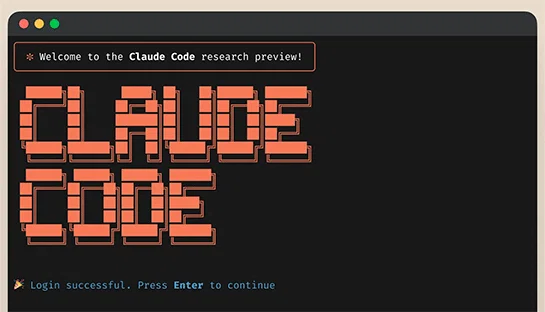
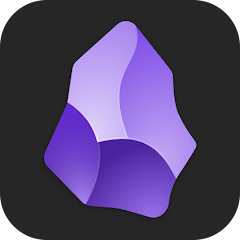

1Astra とは（正体・思想・3 つの数字）
5注意点（9/28 の事件と 3 か条）
2できること（読む・作る・操作する・動かす）
6Claude Fable 5.1 との対比
3使い方と料金（Plus の盲点）
7ワークタイム・まとめ
4任せ方のコツ（指示の 4 要素）
1デスクトップアプリを入れる（古い場合は更新）
2アプリを完全に終了して再起動
3左上の「ChatGPT」を選び、上のトグルで Chat → Work
4思考の強さは Medium から
5一覧から「GPT-6 Astra」を選ぶ

